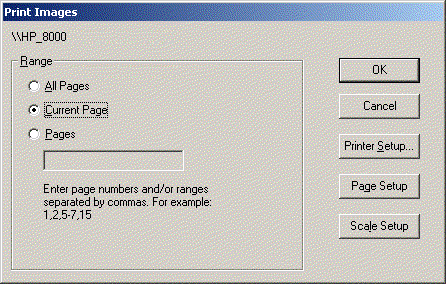
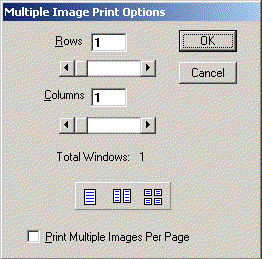
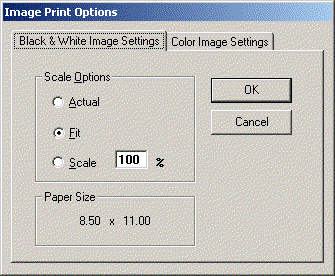

| Document Viewer Users Guide |
| |
| Print Images Dialog Box |
|
This is the main dialog box for printing images displayed by the document viewer.
Use the Range option to select the pages to be printed.
|
|

|
| |
| Multiple Image Print Options Dialog Box |
|
This dialog box is displayed when the Page Setup button is clicked in the main printer dialog box.
|
|

|
| Rows: |
Select the number of rows to print, maximum of 5. |
| Columns: |
Select the number of columns to print, maximum of 5. |
| Total Windows: |
Total windows selected. |
| Quick Buttons: |
Used to select 1 of 3 settings, single screen (1), split screen (2) or quad view (4). |
| Print Multiple Images Per Page: |
When checked, this becomes the print default for all printing from this specific station. |
|
| |
| Image Print Options Dialog Box |
|
This dialog box is displayed when the Scale Setup button is clicked in the main printer dialog box.
|
|

|
| Actual: |
Prints an image using its actual size. |
| Fit: |
Fits the entire image into a printed page.
This is the recommended setting for printing document pages.
|
| Scale: |
Scales the image by the desired percentage before printing it. |
|
|
Back to Users Guide Main Page |
Close This Window
|